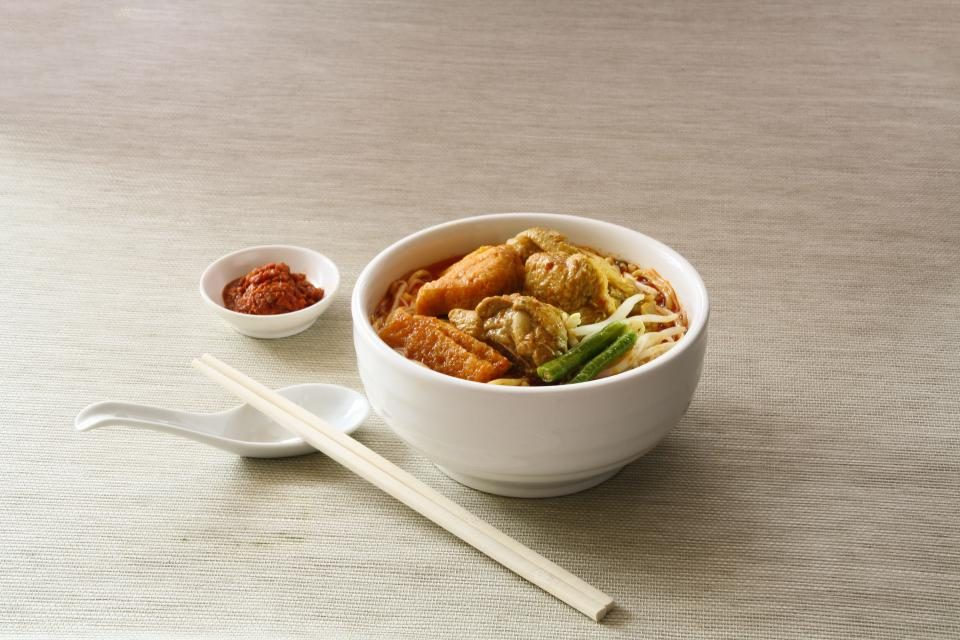

01
酒田名物 ワンタンメン(チャーシュートッピング可)
旨みのある醤油スープに、つるっとした皮のワンタンを合わせた一杯。麺量はやや多めで、満腹感もしっかり得られます。チャーシューのトッピングも可能です。
中華そば蘭
テーブルとカウンターで15名程度の小さな店内に、次々とお客様が訪れます。むちっとした食感の麺と、丁寧に仕込んだスープを、保田の地でお待ちしています。
中華そば蘭は、新潟県阿賀野市保田にある、テーブルとカウンターで15名程度の小さなお店です。決して広い店内ではありませんが、次から次へとお客様が訪れ、外で少し待っていただく時間が生まれる日もあります。
麺は「むちっとした」「コシがある」と評される食感が特長です。一口ごとに感じる弾力を、丁寧に仕込んだスープと一緒に味わっていただけます。
お車でお越しの際は、ダイソー・ひらせいと共有の駐車場をご利用いただけます。買い物のついでに、あるいは少し足を延ばして、保田の一杯を食べにいらしてください。
スープが薄まらないように、スープそのものを凍らせた「スープ氷」を浮かべる冷やしラーメン。出汁が利いた、あっさりさっぱりしながらも深みのある冷たいスープに、程よい太さと弾力の麺がよく合います。
ご来店のお客様から「今年食べた冷やしラーメンの中で一番美味しかった」という声もいただいています。暑い日の一杯に、ぜひお試しください。
一般的な背脂系の辛口ラーメンとは違い、揚げ玉と魚粉、香辛料を効かせたのが蘭々レッドです。揚げ玉のカリッとした食感とネギの香りが良く合い、風味豊かな一杯に仕上がっています。
「思ったよりも辛かった」という声もあるほどの辛さです。辛いものがお好きな方はもちろん、少し刺激のある一杯を試してみたい方にもおすすめします。
素直に美味しいと思える鶏白湯塩らーめん。麺のむちっとした感触も好みでした。
のどぐろは優しい味わい。蘭々レッドは思ったより辛くて香辛料と魚粉が効いていて美味しい。
今年食べた冷やしラーメンの中で一番美味しかった。出汁が利いていて深みのある冷たいスープが最高です。
Googleマップの口コミより(抜粋・匿名化)
※メニューの価格は店頭にてご確認ください。
Googleマップで見るご予約については、店舗へお電話にてご確認ください。最新の営業状況やメニューについては、Instagramでもご案内しています。
掲載写真はイメージ素材(フリー素材)を使用しています。実際の店舗・メニューとは異なる場合があります。一部の写真はフリー素材のイメージです。実際の店内・お料理写真は貴店ご提供のものに差し替えます。※掲載中の写真7点のうち6点は出典情報が確認できておらず、本番公開前に出典確認済み素材または貴店ご提供の写真への差し替えが必須です。